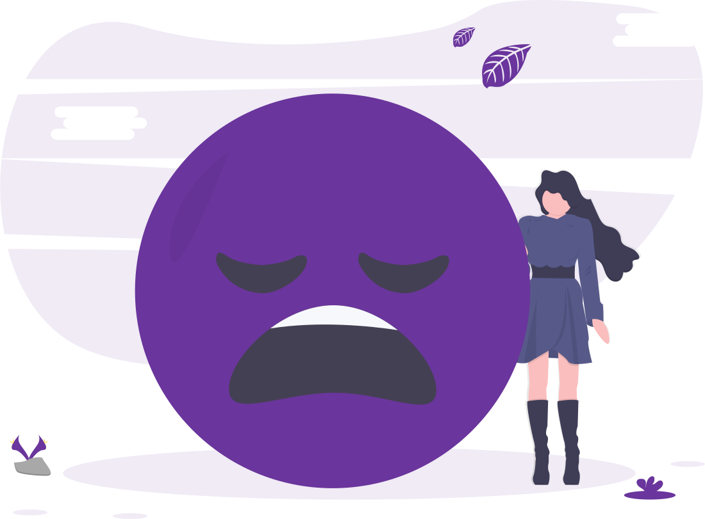

MOOD TRACKER
Don't let your emotions control you.
Take advantage of our mood tracker and express how you feel.
See My Happiness Index
Play Me Some Music
DAILY LOG
How are you feeling today?
Votes:
Add a Category:
OR
Existing Category Name:
Add Data
Remove Data
My Vote

Oh snap! Seems like you're feeling down right now.
How about some custom music recommendations to cheer you up?
Leave Me Alone
Yes! That would help.
WEEKLY HAPPINESS INDEX